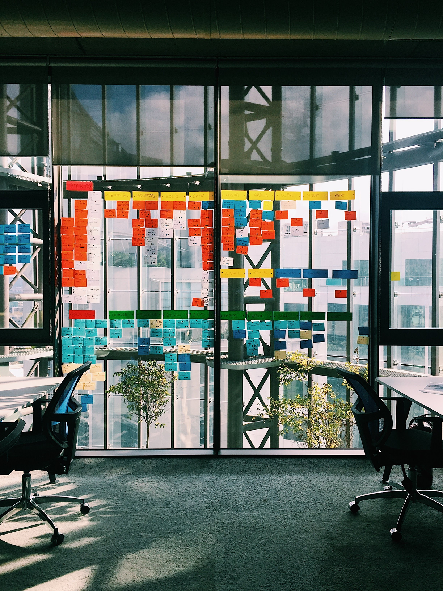
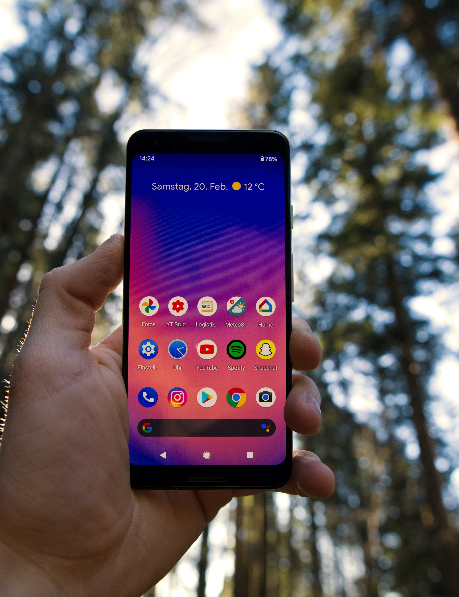
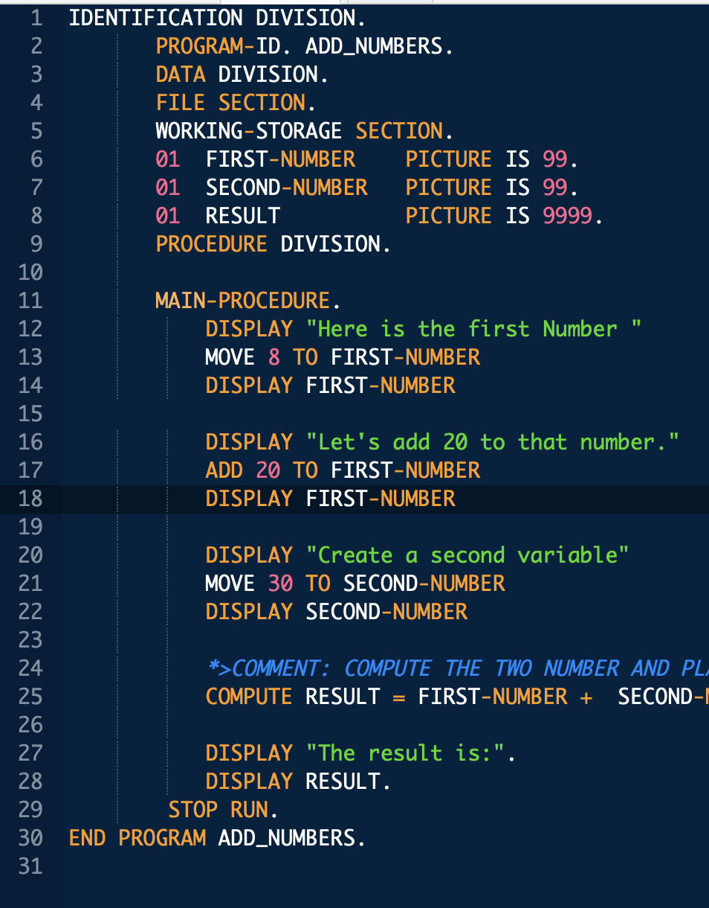

Computer Essencials | CST8101
Level 1
The essentials of computer software, hardware, and laptop management form the foundation for building further technical programming skills. Learn to configure your laptop environment, basic PC and troubleshoot problems. Create backups, install virus protection, and manage files through a basic understanding of the Windows Operating System. Install and configure the Windows Operating System, and a virtual machine environment. Explore computer organization including basic numerical systems, functional hardware and software components needed to run programs.

Introduction to Computer Programming | CST8116
Level 1
The essentials of computer software, hardware, and laptop management form the foundation for building further technical programming skills. Learn to configure your laptop environment, basic PC and troubleshoot problems. Create backups, install virus protection, and manage files through a basic understanding of the Windows Operating System. Install and configure the Windows Operating System, and a virtual machine environment. Explore computer organization including basic numerical systems, functional hardware and software components needed to run programs..

Introduction to Database | CST8215
Level 1
Rapid changes in technology have created personal and employment choices that challenge each of us to find our place as contributing citizens in the emerging society. Life in the 21st century presents significant opportunities, but it also creates potential hazards and ethical problems that demand responsible solutions. Students explore the possibilities ahead, assess their own aptitudes and strengths, and apply critical thinking and decision-making tools to help resolve some of the important issues in our complex society with its competing interests

Achieving Success in Changing Environments | CST8300
Level 1
Rapid changes in technology have created personal and employment choices that challenge each of us to find our place as contributing citizens in the emerging society. Life in the 21st century presents significant opportunities, but it also creates potential hazards and ethical problems that demand responsible solutions. Students explore the possibilities ahead, assess their own aptitudes and strengths, and apply critical thinking and decision-making tools to help resolve some of the important issues in our complex society with its competing interests.

Communications I | ENL1813T
Level 1
Communication remains an essential skill sought by employers, regardless of discipline or field of study. Using a practical, vocation-oriented approach, students focus on meeting the requirements of effective communication. Through a combination of lectures, exercises, and independent learning, students practise writing, speaking, reading, listening, locating and documenting information and using technology to communicate professionally. Students develop and strengthen communication skills that contribute to success in both educational and workplace environments.

Technical Mathematics for Computer Science | MAT8001C
Level 1
The study of algebraic and transcendental functions is an essential prerequisite to Calculus. Students manipulate algebraic expressions, solve algebraic equations and linear systems and learn the properties of and graph algebraic and transcendental functions. Students investigate computer number systems in addition to Boolean algebra and logic to help solve problems involving computer systems. Students also study the addition and subtraction of vectors using vector components.
Database Systems | CST2355
Level 2
Students acquire practical experience using market-leading object-relational database management systems like Oracle and MySQL. Students obtain hands-on experience with advanced engineering modeling tools along with SQL, SQL scripts and programming with Oracle's PL/SQL blocks. Database concepts covered include advanced SQL, case structures, rollup and cube operations, metadata manipulation, data storage and retrieval, security and transaction control and data warehousing. Open source database software is also explored.

Operating System Fundamentals (Gnu/Linux) | CST8102
Level 2
Learn the basic concepts and components of Operating Systems (OS), and how they function and interact with hardware and software components. Explore the details of operating system structures, process management, storage management, installation, configuration, and administration both in theory and through practical assignments based on the GNU/Linux operating system. Lab exercises are designed to demonstrate how to implement the theory by developing skills using the powerful GNU/Linux command-line tools and utilities.

Object Oriented Programming (Java) | CST8284
Level 2
Learn object oriented programming methodology using the Java programming language. Object oriented concepts, such as encapsulation, inheritance, abstraction and polymorphism are covered and reinforced with practical applications.
Web Programming | CST8285
Level 2
Learn the basics of web programming, website design and implementation. JavaScript, HTML5, and PHP are used to explore web-based solutions to problems of increasing interactivity and complexity. Lectures are reinforced by practical assignments that encourage students to construct and maintain their own websites.

Technical Communication for Engineering Technologies | ENL2019T
Level 2
The ability to communicate effectively in a technically-oriented interdisciplinary workplace is a foundational skill in an innovation-driven economy. Students are exposed to exercises and assignments designed to foster independent and collaborative critical thinking, research, writing, visual communication and presentation skills related to technical topics.

Cooperative Education Readiness | GEP1001
Level 2
Students are guided through a series of activities which prepares them for their co-op job search term. Through a detailed orientation students learn the cooperative education program policies and procedures related to searching and securing a work term opportunity. Students identify their strengths and transferable skills and participate in workshop style sessions that focus on cover letter and resume development, interview techniques and job search strategies. Students learn how to navigate HireAC where employers post cooperative education job opportunities. Students reflect on workplace success, ethics and responsibilities

Introduction to Astronomy | AST2000
General Education Elective
What can the sky tell us about our place in the universe, and how life began? This introductory course to astronomy will teach students indigenous and Western constellations in the sky, as well as introduce them to the major planets. Students will act as beginning astronomers and engineers by performing sketches, doing research on astronomy topics, and learning about missions to Mars that are on the hunt for signs of life.

Systems Analysis and Design | CST2234
Level 3 | Ongoing
Guided by industry standard software engineering methodologies, students gain hands-on experience with case studies used to develop systems from inception through elaboration, construction and transition phases. Object-oriented design, modeling tools and techniques are used to produce system specifications. Project management principles are also used within team developed projects. Software methodologies discussed include the Systems Development Life Cycle (SDLC), agile approach, Rational Unified Process (RUP)and Rapid Application Development (RAD).

Mobile Graphical Interface Programming | CST2335
Level 3 | Ongoing
Mobile devices play an instrumental part of everyday life, thus requiring knowledge of mobile graphical user interface development. Students explore graphical user interface programming in a mobile Android environment. Students learn how to program applications using the latest Android development tools. Topics include application architecture, interface design, network communication, and database integration.
Network Programming | CST8109
Level 3 | Ongoing
Students explore topics including the basic structure, design and layered communications models, with an emphasis on data communications, TCP/IP protocol suite, socket programming and multi-threading concepts. Labs include practical exercises in basic networking and using socket programming, along with multi-threading, in an environment rich with common networking tools for diagnosing and troubleshooting typical network programming problems.
Object Oriented Programming with Design Patterns | CST8288
Level 3 | Ongoing
Design patterns are programming architecture solutions to common challenges faced in software implementation. Students implement best practices of object-oriented program development with software design patterns. Students also apply Unified Modeling Language (UML) program specifications in the Java programming language. SQL through JDBC technology is used embedded for developing and using "data access objects". Course topics include refactoring, domain modelling, JDBC and multithreaded servlet programming.

Business Programming | CST8283
Level 3 | Ongoing
Information systems built using the COBOL programming language support important institutions such as government services and the banking sectors. Students create COBOL programs in a business environment using structured methodology in the latest visual programming environment. Topics include output design, logic design tools, structured, top-down and modular coding, testing and debugging, and documentation. Students examine interactive, file-based, and database processing of data related to business problems. Arrays, indexed files, database access and sub-programs are explored.